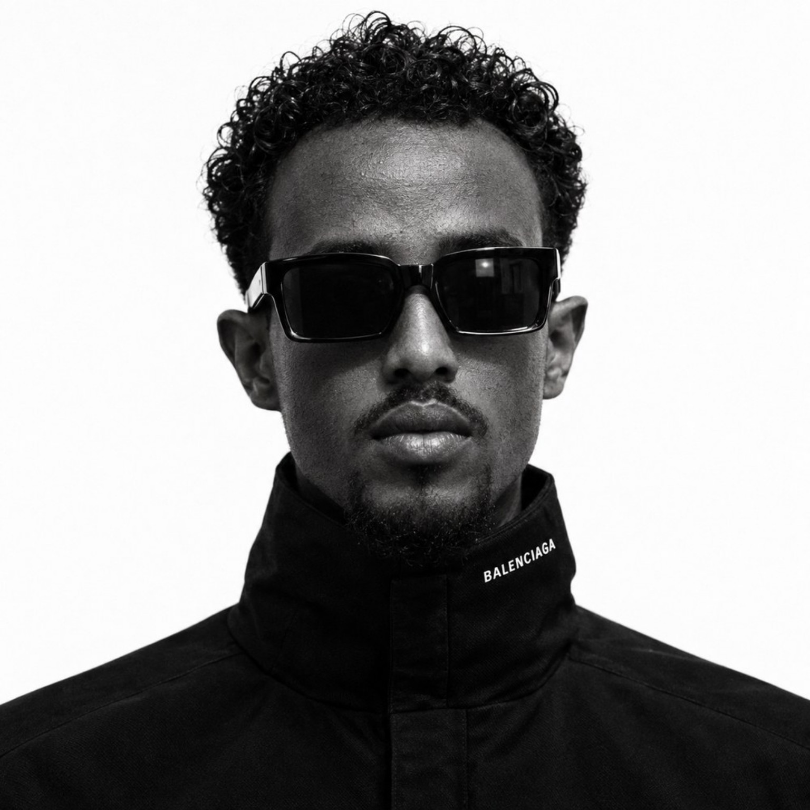

Portfolio / 2026
01 — PERSONAL IDENTITY
Guled
Hassen
Engineer Digital Product Builder Web Developer
Building practical digital systems, business platforms, data tools, and product experiences for real-world problems.
- 8+Projects
- 5Disciplines
- Digital + PhysicalOutput

GH / 01 ENGINEER · BUILDER · DEVELOPER01 — Selected Work
Featured projects
Four projects that show the range of the work — digital systems, data platforms, business digitalization and brand experiences.
02 — Work Library
All projects
The complete body of work, organised by discipline. Filter to move between digital systems, engineering, business, brand and data.
03 — Capabilities
What the work covers
The projects sit at the intersection of engineering thinking, digital product design and business practice.
Digital Product
- System architecture
- Dashboards
- Data interfaces
- Interactive tools
Web
- Responsive websites
- Business platforms
- Landing pages
- Web applications
Engineering
- Construction
- Manufacturing
- Technical documentation
- Industrial applications
Design
- UI/UX
- Brand systems
- Product presentation
- Visual communication
Business
- Business digitalization
- Catalog systems
- Product presentation
- Export / business platforms
Approach
- Structure before surface
- Systems over pages
- Clarity over decoration
- Built to be extended
04 — About
Engineer · Digital Product Builder · Web Developer
I work across two worlds that are usually kept apart: physical engineering and digital product. That combination shapes how I approach problems — structure first, then interface.
The projects collected here are not a set of unrelated websites. They are one body of work: digital systems that organise complex information, data tools that make historical datasets usable, business platforms that present products and operations professionally, and brand experiences that connect identity with product.
Each project starts the same way — understand what has to be organised, define the structure, then build the interface around it. The result is work that is practical, maintainable and built to be extended.
05 — Contact
Let's build something practical.
Open to work involving digital systems, business platforms, data tools, engineering applications and product experiences.
All project sites open in a new tab.